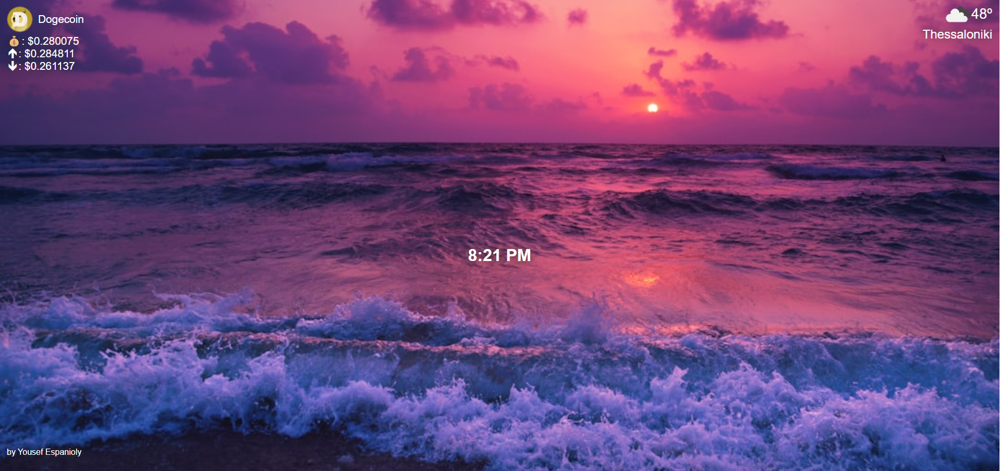

HTML, CSS & JavaScript
This is a dynamic web application that provides real-time updates on cryptocurrency prices, weather conditions, and the current time. It features: A random nature background fetched from Unsplash API. Live cryptocurrency data using the CoinGecko API, displaying Dogecoin's price, daily highs, and lows. Real-time weather updates based on the user's location via OpenWeather API. A digital clock that updates every second. This project showcases API integration, JavaScript DOM manipulation, and real-time data fetching.